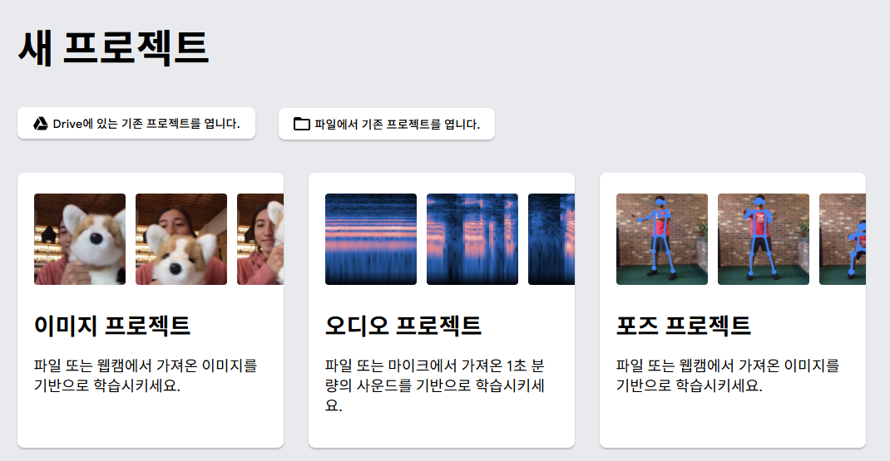

2026학년도 결빛 네트워크 연계 구산 「CODE_Boost」 주말 코딩 캠프
컴퓨터 카메라가 내 표정과 자세를 알아보고
micro:bit가 그림으로 대답해요
강사 · 부내초 교사 유경윤
오늘 배울 것 · 3시간
카메라 AI를 두 번 만들어요
| 시간 | 무엇을 할까요? | 어떻게 |
|---|
| 0:00–0:20 | 지난 시간 떠올리기 · 카메라 AI 알아보기 | 다 같이 |
| 0:20–1:10 | 표정 알아보는 micro:bit 만들기 | 같이 하기 |
| 1:10–1:20 | 쉬는 시간 | – |
| 1:20–2:30 | AI 스쿼트 코치 만들기 ★ → ★★ → ★★★ | 짝과 스스로 |
| 2:30–3:00 | 발표 · 카메라 AI와 공정성 · 정리 | 다 같이 |
같이 하면서 방법을 익히고, 같은 방법으로 스쿼트 AI는 우리 힘으로 만들어요!
지난 시간 떠올리기 · AI 운동 코치
손목의 micro:bit가 운동을 알아봤어요
무엇으로? micro:bit의 가속도 센서(움직임)
어떻게? 동작 예시를 모아 AI를 학습시켰어요
생각해 보기
micro:bit를 차지 않고도 알 수 있을까요?
센서로 알아보기
몸에 micro:bit를 차야 해요
움직임만 느낄 수 있어요
표정은 알 수 없어요
눈으로 알아보기
사람은 눈으로 보고 알아요
컴퓨터의 눈은? 웹캠!
표정도, 자세도 볼 수 있어요
오늘은 컴퓨터 카메라로 보는 AI를 만들어요!
| | 지난 시간 · 센서 AI | 오늘 · 카메라 AI |
|---|
| 보는 것 | micro:bit의 움직임 | 웹캠에 비친 모습 |
| 만드는 곳 | micro:bit CreateAI | Teachable Machine |
| AI가 사는 곳 | micro:bit 안 | 컴퓨터 안 |
| micro:bit는? | 스스로 판단해요 | USB 선으로 결과를 받아요 |
카메라 AI에서는 컴퓨터가 보고 판단하고, micro:bit는 그 결과에 따라 움직여요.
우리 주변의 AI
카메라로 보고 알아보는 기계들
홈트레이닝 앱
카메라로 자세를 보고
운동 횟수를 세요
모두 아주 많은 사진(데이터)을 보고 배웠어요. 오늘 우리는 홈트레이닝 앱처럼 스쿼트를 세는 AI까지 만들어요!
micro:bit
만약 smile이면
웃는 얼굴!
AI가 micro:bit에게 보내는 것은 클래스 이름(글자)이에요. 그래서 이름을 똑같이 써야 해요!
같이 하기 · 50분
표정 알아보는 micro:bit
선생님 화면을 보며 한 단계씩 따라 해요. 단계가 끝나면 손을 들어 알려 주세요!
micro:bit
USB 선으로
컴퓨터에 계속 연결
배터리는 오늘
필요 없어요
USB 케이블
데이터 케이블
충전 전용 케이블은
연결이 안 돼요
노트북
웹캠이 있는
노트북
외장 웹캠을 꽂은
데스크톱도 OK
브라우저
Chrome 또는
Edge
카메라 사용을
허용해 주세요
스쿼트를 할 때는 노트북에서 2~3m 떨어질 수 있는 공간도 필요해요.
같이 하기 1단계 · AI 만들기 준비
Teachable Machine에서 새 프로젝트

1teachablemachine
.withgoogle.com
포즈 프로젝트는 스스로 하기에서 써요
같이 하기 1단계 · AI 만들기 준비
[표준 이미지 모델]을 골라요
같이 하기 2단계 · 클래스 정하기
클래스 3개를 만들어요
생각해 보기
왜 none(아무것도 아님)도 가르칠까요?
none이 없으면?
자리를 비워도 AI는
smile이나 sad 중에서
억지로 하나를 골라요
none이 있으면?
“지금은 웃는 것도,
슬픈 것도 아니야”를
알 수 있어요
지난 시간 CreateAI의 “가만히”와 같은 역할이에요!
같이 하기 3단계 · 데이터 모으기
웹캠으로 사진을 모아요
클래스마다 찍을 것
smile 활짝 웃는 얼굴
sad 입꼬리를 내린 슬픈 얼굴
none 사람 없는 배경, 무표정
고개를 조금씩 돌리고, 가까이·멀리도 찍어요
같은 표정이라도 여러 각도로 찍어야 AI가 잘 배워요!
좋은 사진
✔ 얼굴이 밝고 또렷해요
✔ 표정이 확실히 달라요
✔ 여러 각도, 여러 거리
✔ 클래스마다 장수가 비슷해요
나쁜 사진
✘ 너무 어둡거나 흔들렸어요
✘ 웃다가 찡그린 사진이 섞였어요
✘ 얼굴이 화면 밖으로 잘렸어요
✘ 한 클래스만 사진이 아주 적어요
잘못 찍힌 사진은 사진 위 휴지통으로 지워요. 사진을 다듬는 것도 AI 만들기예요!
같이 하기 4단계 · AI 학습
[모델 학습시키기]를 눌러요
1학습시키기
가운데 [모델 학습시키기]를 누르고 기다려요
2탭을 지켜요
학습하는 동안 다른 탭으로 옮기지 않아요
3미리보기
오른쪽 화면에서 표정을 지으며 막대를 봐요
AI가 사진에서 웃는 얼굴과 슬픈 얼굴의 차이를 스스로 찾아요. 이렇게 찾은 규칙 묶음이 모델이에요.
퀴즈 · 미리보기 막대 읽기
AI는 무엇이라고 생각할까요?
문제 2처럼 막대가 비슷하면 AI가 헷갈린 거예요. 어떻게 고치면 될까요?
같이 하기 5단계 · AI 내보내기
모델을 올리고 링크를 복사해요
2업로드(공유 가능한 링크)를
고르고 [모델 업로드]
링크는 메모장에 붙여 두면
잃어버리지 않아요
잠깐! 개인정보
올라가는 것은 사진이 아니라 모델이에요
내 컴퓨터에만
찍은 사진들
저장하지 않고 탭을 닫으면 사라져요
인터넷에 올라가요
학습한 모델(규칙 묶음)
링크를 아는 사람은 누구나 쓸 수 있어요
모델 링크는 우리 모둠만 써요. 단체 대화방 같은 곳에 올리지 않아요.
같이 하기 6단계 · Make: AI Robots 열기
경고 화면이 나오면 이렇게 해요
2“연결이 비공개로 설정되어
있지 않습니다”가 나오면 [고급]
3맨 아래 makeairobots.com
(안전하지 않음)(으)로 이동
이 사이트는 선생님이 확인했어요.
평소에는 이 경고가 나오면 멈춰요!
같이 하기 6단계 · Make: AI Robots
버튼 3개만 기억해요
MAKE: AI ROBOTS
1. Google Teachable Machine AI Model
2. Starter micro:bit code
3. Connect your micro:bit to your AI!
1번 Teachable Machine으로 가요
우리는 이미 만들었어요
같이 하기 7단계 · 시작 코드 살펴보기
[2. Starter micro:bit code]
시리얼통신 입력될 때
AI가 보낸 이름을 받으면 실행
SerialData
받은 이름이 들어 있는 변수
같이 하기 7단계 · 코드 고치기
우리 클래스 이름으로 바꿔요
2Class 1·2·3을
smile · sad · none
3아이콘을 고르고
none은 LED 스크린 지우기
같이 하기 8단계 · micro:bit에 넣기
코드를 다운로드해요
1USB 연결
micro:bit를
컴퓨터에 꽂아요
3탭 닫기
다운로드가 끝나면
MakeCode 탭을 닫아요
USB 선은 빼지 않아요! 이 선으로 AI의 결과가 들어와요.
같이 하기 9단계 · AI와 연결하기
[3. Connect your micro:bit to your AI!]
1버튼 누르기
Make: AI Robots의
노란 3번 버튼
2포트 고르기
팝업에서 mbed Serial Port를 골라 [연결]
3링크 넣기
복사해 둔 모델 링크를 붙여 넣어요
“Psst, it might be called mbed Serial Port.” — 포트 이름에 mbed가 보이면 그것!
웃으면 micro:bit에 웃는 얼굴이 나와요
위의 세 가지가 되면 성공! 탐구는 결과를 기억해 두었다가 마지막에 이야기해요.
아무 반응이 없어요
클래스 이름 철자,
대소문자가 같나요?
연결이 안 돼요
MakeCode 탭을 닫았나요?
데이터용 USB 선?
계속 none이에요
얼굴이 밝게 보이나요?
카메라를 허용했나요?
자꾸 틀려요
사진을 더 모으고
다시 학습 → 업로드
계속 삑삑거려요
도 1/8 박자 연주
블록을 지웠나요?
사이트가 안 열려요
Chrome·Edge인가요?
[고급]을 눌렀나요?
쉬는 동안 몸을 풀어요.
다음은 스쿼트예요!
노트북 앞에 2~3m 공간을 만들어 두세요
스스로 하기 · 70분 · 짝 활동
AI 스쿼트 코치
★자세 그림 · 서면 서 있는 그림, 앉으면 앉은 그림
★★★목표 축하 · 10번을 채우면 하트와 소리
선수 스쿼트를 해요 · 코치 컴퓨터를 맡아요 · 한 단계마다 역할 바꾸기
스스로 하기 · 한 장 지도
표정 때와 순서가 똑같아요
| 단계 | 할 일 | 표정 때와 다른 점 | ✔ |
|---|
| 1 | Teachable Machine 새 프로젝트 | 포즈 프로젝트를 골라요 | |
| 2 | 클래스 3개 | stand · squat · none | |
| 3 | 샘플 모으기 | 2~3m 떨어져 온몸이 나오게, 짝이 녹화 | |
| 4 | 학습 → 미리보기 | 똑같아요 | |
| 5 | 업로드 → 링크 복사 | 똑같아요 (새 링크!) | |
| 6 | 시작 코드 고치기 | 이름을 stand · squat · none으로 | |
| 7 | 다운로드 → MakeCode 탭 닫기 | 똑같아요 | |
| 8 | Make: AI Robots 3번으로 연결 | 새 링크를 넣어요 | |
★ 1~2단계 · 포즈 프로젝트
몸의 자세를 보는 AI예요
2클래스 이름
stand · squat · none
포즈 AI는 사진 대신
머리·어깨·무릎 같은 점의
위치를 보고 판단해요
★ 3단계 · 자리 잡기
머리부터 발끝까지 화면에!
📏
2~3m 떨어지기
앉았을 때도
온몸이 보여야 해요
🚶
뒤에는 아무도
다른 친구가 지나가면
AI가 헷갈려요
노트북 화면을 살짝 뒤로 젖혀서 카메라가 온몸을 보게 해요.
★ 3단계 · 샘플 모으기
선수는 자세, 코치는 녹화
stand
똑바로 선 자세
팔 위치를 조금씩 바꿔요
squat
가장 낮게 앉은 자세
팔은 앞으로 뻗어요
none
화면 밖으로 나가거나
옆으로 비켜 선 모습
클래스마다 샘플 50개 이상! 앉는 중간 자세는 넣지 않아요.
★ 4~8단계 · 학습부터 연결까지
자세에 맞는 그림을 보여 줘요
시작 코드의 이름을
stand · squat · none으로
[기본] LED 출력에
자세 그림을 직접 그려요
위의 세 가지가 되면 ★ 성공! 시간이 남으면 ★★ 횟수 세기에 도전해요.
“지금 stand”만으로는 몰라요. 바로 전에 squat였는지 기억해야 해요!
squat이 처음 들어오면
이전자세 = squat + 그림
stand인데 이전자세가 squat이면
이전자세 = stand + 횟수 +1
none이면 이전자세 = none
A+B 처음부터 다시
★★ 실행해서 확인
스쿼트 10번! 몇 번이 나올까요?
| 도전 | 실제 횟수 | micro:bit |
|---|
| 1회 | 10번 | ____번 |
| 2회 | 10번 | ____번 |
| 짝 | 10번 | ____번 |
숫자가 다르다면 왜일까요? 너무 빨리 했나요? 덜 앉았나요?
★★★ 목표 달성 축하
10번을 채우면 축하해요
횟수 = 10이면
[음악] 행복함 배경에서 실행
+ 하트
더 해 보기
· 목표 횟수 바꾸기
· 다른 운동 가르치기
발표 · 짝별 1분
우리 AI 스쿼트 코치를 소개해요
1보여 주기
스쿼트를 하며
micro:bit 반응을 보여요
3어려웠던 점
AI가 틀린 순간은?
왜 그랬을까요?
다른 짝의 AI로 내가 해 보면 잘 맞을까요?
카메라 AI와 공정성 · 개인정보
모두에게 잘 맞고, 모두를 지키는 AI
누구에게 잘 맞을까요?
· 키가 아주 크거나 작은 친구
· 휠체어를 탄 친구
· 어두운 곳에 있는 친구
내 몸으로만 배운 AI는 다른 사람에게는 덜 정확할 수 있어요
카메라가 나를 볼 때
· 찍기 전에 허락받기
· 모델 링크는 함부로 공유하지 않기
· 경고 화면이 나오면 멈추기
편리한 만큼 조심할 것도 있어요
다양한 사람의 데이터를 모아요
내 얼굴·몸 정보는 소중히 다뤄요
오늘 배운 것
AI는 카메라로도 배우고,
micro:bit는 AI의 결과로
움직여요
① 사진·자세 모으기
② 학습·업로드
③ 코드·연결